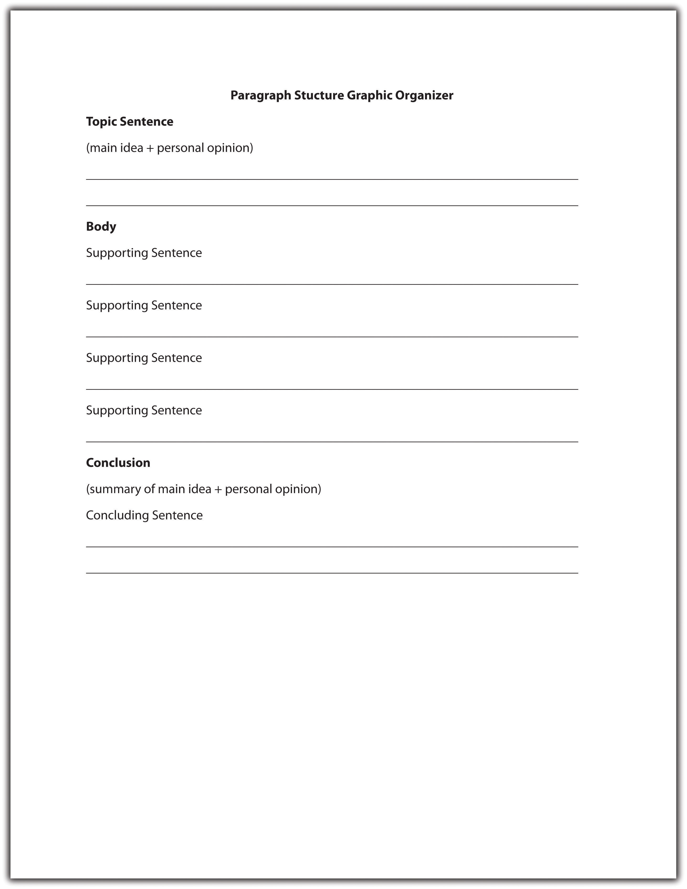

Now that you have identified common purposes for writing and learned how to select appropriate content for a particular audience, you can think about the structure of a paragraph in greater detail. Composing an effective paragraph requires a method similar to building a house. You may have the finest content, or materials, but if you do not arrange them in the correct order, then the final product will not hold together very well.
A strong paragraph contains three distinct components:
The foundation of a good paragraph is the topic sentence, which expresses the main idea of the paragraph. The topic sentence relates to the thesis, or main point, of the essay (see Chapter 9 "Writing Essays: From Start to Finish" for more information about thesis statements) and guides the reader by signposting what the paragraph is about. All the sentences in the rest of the paragraph should relate to the topic sentence.
This section covers the major components of a paragraph and examines how to develop an effective topic sentence.
Pick up any newspaper or magazine and read the first sentence of an article. Are you fairly confident that you know what the rest of the article is about? If so, you have likely read the topic sentence. An effective topic sentence combines a main idea with the writer’s personal attitude or opinion. It serves to orient the reader and provides an indication of what will follow in the rest of the paragraph. Read the following example.
Creating a national set of standards for math and English education will improve student learning in many states.
This topic sentence declares a favorable position for standardizing math and English education. After reading this sentence, a reader might reasonably expect the writer to provide supporting details and facts as to why standardizing math and English education might improve student learning in many states. If the purpose of the essay is actually to evaluate education in only one particular state, or to discuss math or English education specifically, then the topic sentence is misleading.
When writing a draft of an essay, allow a friend or colleague to read the opening line of your first paragraph. Ask your reader to predict what your paper will be about. If he or she is unable to guess your topic accurately, you should consider revising your topic sentence so that it clearly defines your purpose in writing.
Topic sentences contain both a main ideaThe topic discussed throughout the paragraph. (the subject, or topic that the writer is discussing) and a controlling ideaIndicates the writer’s stance on the main idea of a paragraph. The controlling idea appears in the paragraph’s topic sentence. (the writer’s specific stance on that subject). Just as a thesis statement includes an idea that controls a document’s focus (as you will read about in Chapter 8 "The Writing Process: How Do I Begin?"), a topic sentence must also contain a controlling idea to direct the paragraph. Different writers may use the same main idea but can steer their paragraph in a number of different directions according to their stance on the subject. Read the following examples.
Although the main idea—marijuana—is the same in all three topic sentences, the controlling idea differs depending on the writer’s viewpoint.
Circle the main idea and underline the controlling idea in each of the following topic sentences.
Five characteristics define a good topic sentence:
A good topic sentence provides an accurate indication of what will follow in the rest of the paragraph.
Weak example. People rarely give firefighters the credit they deserve for such a physically and emotionally demanding job. (The paragraph is about a specific incident that involved firefighters; therefore, this topic sentence is too general.)
Stronger example. During the October riots, Unit 3B went beyond the call of duty. (This topic sentence is more specific and indicates that the paragraph will contain information about a particular incident involving Unit 3B.)
A good topic sentence contains both a topic and a controlling idea or opinion.
Weak example. In this paper, I am going to discuss the rising suicide rate among young professionals. (This topic sentence provides a main idea, but it does not present a controlling idea, or thesis.)
Stronger example. The rising suicide rate among young professionals is a cause for immediate concern. (This topic sentence presents the writer’s opinion on the subject of rising suicide rates among young professionals.)
A good topic sentence is clear and easy to follow.
Weak example. In general, writing an essay, thesis, or other academic or nonacademic document is considerably easier and of much higher quality if you first construct an outline, of which there are many different types. (This topic sentence includes a main idea and a controlling thesis, but both are buried beneath the confusing sentence structure and unnecessary vocabulary. These obstacles make it difficult for the reader to follow.)
Stronger example. Most forms of writing can be improved by first creating an outline. (This topic sentence cuts out unnecessary verbiage and simplifies the previous statement, making it easier for the reader to follow.)
A good topic sentence does not include supporting details.
Weak example. Salaries should be capped in baseball for many reasons, most importantly so we don’t allow the same team to win year after year. (This topic sentence includes a supporting detail that should be included later in the paragraph to back up the main point.)
Stronger example. Introducing a salary cap would improve the game of baseball for many reasons. (This topic sentence omits the additional supporting detail so that it can be expanded upon later in the paragraph.)
A good topic sentence engages the reader by using interesting vocabulary.
Weak example. The military deserves better equipment. (This topic sentence includes a main idea and a controlling thesis, but the language is bland and unexciting.)
Stronger example. The appalling lack of resources provided to the military is outrageous and requires our immediate attention. (This topic sentence reiterates the same idea and controlling thesis, but adjectives such as appalling and immediate better engage the reader. These words also indicate the writer’s tone.)
Choose the most effective topic sentence from the following sentence pairs.
a. This paper will discuss the likelihood of the Democrats winning the next election.
b. To boost their chances of winning the next election, the Democrats need to listen to public opinion.
a. The unrealistic demands of union workers are crippling the economy for three main reasons.
b. Union workers are crippling the economy because companies are unable to remain competitive as a result of added financial pressure.
a. Authors are losing money as a result of technological advances.
b. The introduction of new technology will devastate the literary world.
a. Rap music is produced by untalented individuals with oversized egos.
b. This essay will consider whether talent is required in the rap music industry.
Using the tips on developing effective topic sentences in this section, create a topic sentence on each of the following subjects. Remember to include a controlling idea as well as a main idea. Write your responses on your own sheet of paper.
An endangered species
____________________________________________
The cost of fuel
____________________________________________
The legal drinking age
____________________________________________
A controversial film or novel
____________________________________________
When creating a workplace document, use the “top-down” approach—keep the topic sentence at the beginning of each paragraph so that readers immediately understand the gist of the message. This method saves busy colleagues precious time and effort trying to figure out the main points and relevant details.
Headings are another helpful tool. In a text-heavy document, break up each paragraph with individual headings. These serve as useful navigation aids, enabling colleagues to skim through the document and locate paragraphs that are relevant to them.
Learning how to develop a good topic sentence is the first step toward writing a solid paragraph. Once you have composed your topic sentence, you have a guideline for the rest of the paragraph. To complete the paragraph, a writer must support the topic sentence with additional information and summarize the main point with a concluding sentence.
This section identifies the three major structural parts of a paragraph and covers how to develop a paragraph using transitional words and phrases.
An effective paragraph contains three main parts: a topic sentence, the body, and the concluding sentence. A topic sentence is often the first sentence of a paragraph. This chapter has already discussed its purpose—to express a main idea combined with the writer’s attitude about the subject. The body of the paragraph usually follows, containing supporting details. Supporting sentencesA sentence in the middle part of the paragraph that helps explain, enhance, or prove the topic sentence. help explain, prove, or enhance the topic sentence. The concluding sentenceThe final sentence of a paragraph that summarizes the topic sentence using different words. is the last sentence in the paragraph. It reminds the reader of the main point by restating it in different words.
Figure 6.2 Paragraph Structure Graphic Organizer
Read the following paragraph. The topic sentence is underlined for you.
After reading the new TV guide this week I had just one thought—why are we still being bombarded with reality shows? This season, the plague of reality television continues to darken our airwaves. Along with the return of viewer favorites, we are to be cursed with yet another mindless creation. Prisoner follows the daily lives of eight suburban housewives who have chosen to be put in jail for the purposes of this fake psychological experiment. A preview for the first episode shows the usual tears and tantrums associated with reality television. I dread to think what producers will come up with next season, but if any of them are reading this blog—stop it! We’ve had enough reality television to last us a lifetime!
The first sentence of this paragraph is the topic sentence. It tells the reader that the paragraph will be about reality television shows, and it expresses the writer’s distaste for these shows through the use of the word bombarded.
Each of the following sentences in the paragraph supports the topic sentence by providing further information about a specific reality television show. The final sentence is the concluding sentence. It reiterates the main point that viewers are bored with reality television shows by using different words from the topic sentence.
Paragraphs that begin with the topic sentence move from the general to the specific. They open with a general statement about a subject (reality shows) and then discuss specific examples (the reality show Prisoner). Most academic essays contain the topic sentence at the beginning of the first paragraph.
Now take a look at the following paragraph. The topic sentence is underlined for you.
Last year, a cat traveled 130 miles to reach its family, who had moved to another state and had left their pet behind. Even though it had never been to their new home, the cat was able to track down its former owners. A dog in my neighborhood can predict when its master is about to have a seizure. It makes sure that he does not hurt himself during an epileptic fit. Compared to many animals, our own senses are almost dull.
The last sentence of this paragraph is the topic sentence. It draws on specific examples (a cat that tracked down its owners and a dog that can predict seizures) and then makes a general statement that draws a conclusion from these examples (animals’ senses are better than humans’). In this case, the supporting sentences are placed before the topic sentence and the concluding sentence is the same as the topic sentence.
This technique is frequently used in persuasive writing. The writer produces detailed examples as evidence to back up his or her point, preparing the reader to accept the concluding topic sentence as the truth.
Sometimes, the topic sentence appears in the middle of a paragraph. Read the following example. The topic sentence is underlined for you.
For many years, I suffered from severe anxiety every time I took an exam. Hours before the exam, my heart would begin pounding, my legs would shake, and sometimes I would become physically unable to move. Last year, I was referred to a specialist and finally found a way to control my anxiety—breathing exercises. It seems so simple, but by doing just a few breathing exercises a couple of hours before an exam, I gradually got my anxiety under control. The exercises help slow my heart rate and make me feel less anxious. Better yet, they require no pills, no equipment, and very little time. It’s amazing how just breathing correctly has helped me learn to manage my anxiety symptoms.
In this paragraph, the underlined sentence is the topic sentence. It expresses the main idea—that breathing exercises can help control anxiety. The preceding sentences enable the writer to build up to his main point (breathing exercises can help control anxiety) by using a personal anecdote (how he used to suffer from anxiety). The supporting sentences then expand on how breathing exercises help the writer by providing additional information. The last sentence is the concluding sentence and restates how breathing can help manage anxiety.
Placing a topic sentence in the middle of a paragraph is often used in creative writing. If you notice that you have used a topic sentence in the middle of a paragraph in an academic essay, read through the paragraph carefully to make sure that it contains only one major topic. To read more about topic sentences and where they appear in paragraphs, see Chapter 8 "The Writing Process: How Do I Begin?".
Some well-organized paragraphs do not contain a topic sentence at all. Instead of being directly stated, the main idea is implied in the content of the paragraph. Read the following example:
Heaving herself up the stairs, Luella had to pause for breath several times. She let out a wheeze as she sat down heavily in the wooden rocking chair. Tao approached her cautiously, as if she might crumble at the slightest touch. He studied her face, like parchment; stretched across the bones so finely he could almost see right through the skin to the decaying muscle underneath. Luella smiled a toothless grin.
Although no single sentence in this paragraph states the main idea, the entire paragraph focuses on one concept—that Luella is extremely old. The topic sentence is thus implied rather than stated. This technique is often used in descriptive or narrative writing. Implied topic sentences work well if the writer has a firm idea of what he or she intends to say in the paragraph and sticks to it. However, a paragraph loses its effectiveness if an implied topic sentence is too subtle or the writer loses focus.
Avoid using implied topic sentences in an informational document. Readers often lose patience if they are unable to quickly grasp what the writer is trying to say. The clearest and most efficient way to communicate in an informational document is to position the topic sentence at the beginning of the paragraph.
Identify the topic sentence, supporting sentences, and concluding sentence in the following paragraph.
The desert provides a harsh environment in which few mammals are able to adapt. Of these hardy creatures, the kangaroo rat is possibly the most fascinating. Able to live in some of the most arid parts of the southwest, the kangaroo rat neither sweats nor pants to keep cool. Its specialized kidneys enable it to survive on a miniscule amount of water. Unlike other desert creatures, the kangaroo rat does not store water in its body but instead is able to convert the dry seeds it eats into moisture. Its ability to adapt to such a hostile environment makes the kangaroo rat a truly amazing creature.
Collaboration
Please share with a classmate and compare your answers.
If you think of a paragraph as a hamburger, the supporting sentences are the meat inside the bun. They make up the body of the paragraph by explaining, proving, or enhancing the controlling idea in the topic sentence. Most paragraphs contain three to six supporting sentences depending on the audience and purpose for writing. A supporting sentence usually offers one of the following:
Reason
Sentence: The refusal of the baby boom generation to retire is contributing to the current lack of available jobs.
Fact
Sentence: Many families now rely on older relatives to support them financially.
Statistic
Sentence: Nearly 10 percent of adults are currently unemployed in the United States.
Quotation
Sentence: “We will not allow this situation to continue,” stated Senator Johns.
Example
Sentence: Last year, Bill was asked to retire at the age of fifty-five.
The type of supporting sentence you choose will depend on what you are writing and why you are writing. For example, if you are attempting to persuade your audience to take a particular position you should rely on facts, statistics, and concrete examples, rather than personal opinions. Read the following example:
There are numerous advantages to owning a hybrid car. (Topic sentence)
First, they get 20 percent to 35 percent more miles to the gallon than a fuel-efficient gas-powered vehicle. (Supporting sentence 1: statistic)
Second, they produce very few emissions during low speed city driving. (Supporting sentence 2: fact)
Because they do not require gas, hybrid cars reduce dependency on fossil fuels, which helps lower prices at the pump. (Supporting sentence 3: reason)
Alex bought a hybrid car two years ago and has been extremely impressed with its performance. (Supporting sentence 4: example)
“It’s the cheapest car I’ve ever had,” she said. “The running costs are far lower than previous gas powered vehicles I’ve owned.” (Supporting sentence 5: quotation)
Given the low running costs and environmental benefits of owning a hybrid car, it is likely that many more people will follow Alex’s example in the near future. (Concluding sentence)
To find information for your supporting sentences, you might consider using one of the following sources:
To read more about sources and research, see Chapter 11 "Writing from Research: What Will I Learn?".
When searching for information on the Internet, remember that some websites are more reliable than others. websites ending in .gov or .edu are generally more reliable than websites ending in .com or .org. Wikis and blogs are not reliable sources of information because they are subject to inaccuracies.
An effective concluding sentence draws together all the ideas you have raised in your paragraph. It reminds readers of the main point—the topic sentence—without restating it in exactly the same words. Using the hamburger example, the top bun (the topic sentence) and the bottom bun (the concluding sentence) are very similar. They frame the “meat” or body of the paragraph. Compare the topic sentence and concluding sentence from the previous example:
Topic sentence: There are numerous advantages to owning a hybrid car.
Concluding sentence: Given the low running costs and environmental benefits of owning a hybrid car, it is likely that many more people will follow Alex’s example in the near future.
Notice the use of the synonyms advantages and benefits. The concluding sentence reiterates the idea that owning a hybrid is advantageous without using the exact same words. It also summarizes two examples of the advantages covered in the supporting sentences: low running costs and environmental benefits.
You should avoid introducing any new ideas into your concluding sentence. A conclusion is intended to provide the reader with a sense of completion. Introducing a subject that is not covered in the paragraph will confuse the reader and weaken your writing.
A concluding sentence may do any of the following:
Restate the main idea.
Example: Childhood obesity is a growing problem in the United States.
Summarize the key points in the paragraph.
Example: A lack of healthy choices, poor parenting, and an addiction to video games are among the many factors contributing to childhood obesity.
Draw a conclusion based on the information in the paragraph.
Example: These statistics indicate that unless we take action, childhood obesity rates will continue to rise.
Make a prediction, suggestion, or recommendation about the information in the paragraph.
Example: Based on this research, more than 60 percent of children in the United States will be morbidly obese by the year 2030 unless we take evasive action.
Offer an additional observation about the controlling idea.
Example: Childhood obesity is an entirely preventable tragedy.
On your own paper, write one example of each type of concluding sentence based on a topic of your choice.
A strong paragraph moves seamlessly from the topic sentence into the supporting sentences and on to the concluding sentence. To help organize a paragraph and ensure that ideas logically connect to one another, writers use transitional words and phrases. A transitionWords and phrases that show how the ideas in sentences and paragraphs are related. is a connecting word that describes a relationship between ideas. Take another look at the earlier example:
There are numerous advantages to owning a hybrid car. First, they get 20 percent to 35 percent more miles to the gallon than a fuel-efficient gas-powered vehicle. Second, they produce very few emissions during low speed city driving. Because they do not require gas, hybrid cars reduce dependency on fossil fuels, which helps lower prices at the pump. Alex bought a hybrid car two years ago and has been extremely impressed with its performance. “It’s the cheapest car I’ve ever had,” she said. “The running costs are far lower than previous gas-powered vehicles I’ve owned.” Given the low running costs and environmental benefits of owning a hybrid car, it is likely that many more people will follow Alex’s example in the near future.
Each of the underlined words is a transition word. Words such as first and second are transition words that show sequence or clarify order. They help organize the writer’s ideas by showing that he or she has another point to make in support of the topic sentence. Other transition words that show order include third, also, and furthermore.
The transition word because is a transition word of consequence that continues a line of thought. It indicates that the writer will provide an explanation of a result. In this sentence, the writer explains why hybrid cars will reduce dependency on fossil fuels (because they do not require gas). Other transition words of consequence include as a result, so that, since, or for this reason.
To include a summarizing transition in her concluding sentence, the writer could rewrite the final sentence as follows:
In conclusion, given the low running costs and environmental benefits of owning a hybrid car, it is likely that many more people will follow Alex’s example in the near future.
The following chart provides some useful transition words to connect supporting sentences and concluding sentences. See Chapter 8 "The Writing Process: How Do I Begin?" for a more comprehensive look at transitional words and phrases.
Table 6.1 Useful Transitional Words and Phrases
| For Supporting Sentences | |||||
| above all | but | for instance | in particular | moreover | subsequently |
| also | conversely | furthermore | later on | nevertheless | therefore |
| aside from | correspondingly | however | likewise | on one hand | to begin with |
| at the same time | for example | in addition | meanwhile | on the contrary | |
| For Concluding Sentences | |||||
| after all | all things considered | in brief | in summary | on the whole | to sum up |
| all in all | finally | in conclusion | on balance | thus | |
Using your own paper, write a paragraph on a topic of your choice. Be sure to include a topic sentence, supporting sentences, and a concluding sentence and to use transitional words and phrases to link your ideas together.
Collaboration
Please share with a classmate and compare your answers.
Transitional words and phrases are useful tools to incorporate into workplace documents. They guide the reader through the document, clarifying relationships between sentences and paragraphs so that the reader understands why they have been written in that particular order.
For example, when writing an instructional memo, it may be helpful to consider the following transitional words and phrases: before you begin, first, next, then, finally, after you have completed. Using these transitions as a template to write your memo will provide readers with clear, logical instructions about a particular process and the order in which steps are supposed to be completed.